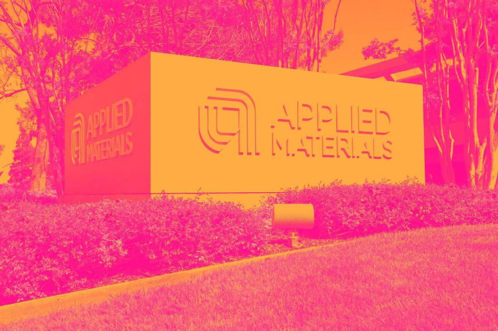
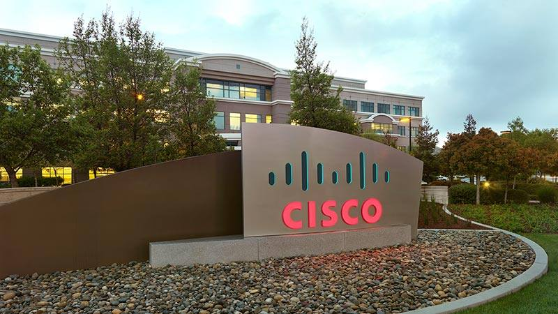
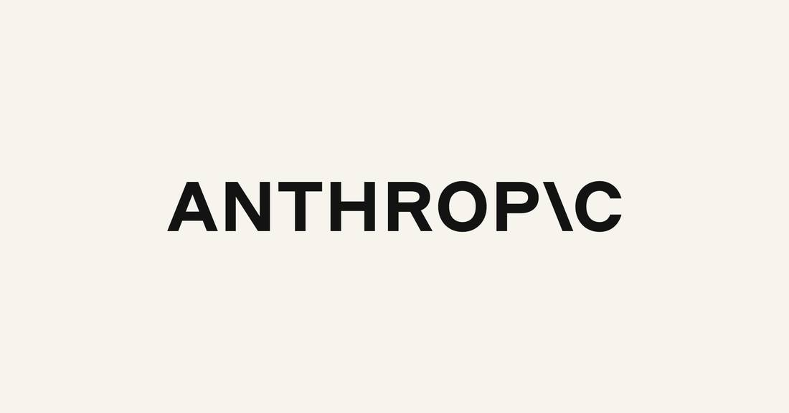

Facts first
Reporting and analysis are kept apart on every page. Sources and uncertainty are stated, not buried.

Cerebras reported third-quarter adjusted sales of $230.9 million, up 70% year over year and beating the $214.70 million analyst consensus. Core cloud and services revenue, reflecting the OpenAI deal, more than tripled to $144.9 million. Cerebras raised its 2026 adjusted revenue forecast to $940 million to $960 million, up from $880 million to $890 million. Shares rose 11% in extended trading. GAAP revenue of $210.8 million missed consensus on that measure; the beat was on adjusted core revenue. Cerebras guided fourth-quarter core revenue to $310 million to $330 million and reiterated that revenue should triple in 2027.

Applied Materials Posts Record $10.41 Billion Quarter, Guides HigherApplied Materials reported record fourth-quarter fiscal 2026 revenue of $10.41 billion, up 53% year over year, with record non-GAAP earnings per share of $4.16, up 92%, beating Wall Street expectations. Full-year revenue reached a record $34.45 billion. Applied guided first-quarter fiscal 2027 revenue to $11.1 billion and non-GAAP earnings per share to $4.35, both above consensus, and unveiled the EPIC Center with four new research partnerships.
Cisco Posts Record $18.5 Billion Quarter as AI Networking Demand AcceleratesCisco reported record first-quarter fiscal 2027 revenue of $18.5 billion, up 24% year over year, with non-GAAP earnings per share of $1.40, up 40%, beating its guidance and Wall Street expectations. Cisco raised full-year fiscal 2027 guidance to $74.8 billion to $75.8 billion in revenue and $5.47 to $5.53 in non-GAAP earnings per share, and lifted its hyperscaler AI infrastructure revenue expectation to $9 billion. Shares rose about 2.4% in after-hours trading.OpenAI Launches Daybreak Red Team and Defense Factory at Cyber KeynoteOpenAI launched Daybreak Red Team and Daybreak Defense Factory at its Cyber at the Frontier keynote on November 12, 2026, two security products built on GPT-6 Cyber. Red Team, in early access, uses coordinated agents to pen-test web applications and validate reported vulnerabilities. Defense Factory automates the defensive loop of finding, validating and fixing flaws, producing merge-ready pull requests with tests for engineer review. The same day, a nonprofit coalition sued to halt frontier-model development, citing AI-driven cyberattacks. Anthropic Launches Claude for Manufacturing With 17 Workflow SkillsAnthropic launched Claude for Manufacturing on November 12, 2026, a plugin for Team and Enterprise plans with 17 skills for quoting, quality investigations, maintenance diagnosis, purchasing, design and production reporting, working from manufacturers' own records through connectors to Autodesk Fusion, Infor, Microsoft 365 and Oracle NetSuite. Every workflow ends in human review, and the plugin does not operate equipment. Infor announced its own plugin the same day, letting approved changes flow back into Infor from Claude.
Anthropic Launches Claude for Manufacturing With 17 Workflow SkillsAnthropic launched Claude for Manufacturing on November 12, 2026, a plugin for Team and Enterprise plans with 17 skills for quoting, quality investigations, maintenance diagnosis, purchasing, design and production reporting, working from manufacturers' own records through connectors to Autodesk Fusion, Infor, Microsoft 365 and Oracle NetSuite. Every workflow ends in human review, and the plugin does not operate equipment. Infor announced its own plugin the same day, letting approved changes flow back into Infor from Claude.| WORLD & POLICY | 16 |
| MARKETS & INDUSTRY | 110 |
| AI FRONTIER | 161 |
| ROBOTICS & AI | 24 |
| WEB3 INFRASTRUCTURE | 4 |
| RESEARCH & SCIENCE | 6 |
Cerebras Beats Q3 Estimates and Raises 2026 Forecast on AI DemandCerebras reported third-quarter adjusted sales of $230.9 million, up 70% year over year and beating the $214.70 million analyst consensus. Core cloud and services revenue, reflecting the OpenAI deal, more than tripled to $144.9 million. Cerebras raised its 2026 adjusted revenue forecast to $940 million to $960 million, up from $880 million to $890 million. Shares rose 11% in extended trading. GAAP revenue of $210.8 million missed consensus on that measure; the beat was on adjusted core revenue. Cerebras guided fourth-quarter core revenue to $310 million to $330 million and reiterated that revenue should triple in 2027.Applied Materials Posts Record $10.41 Billion Quarter, Guides HigherApplied Materials reported record fourth-quarter fiscal 2026 revenue of $10.41 billion, up 53% year over year, with record non-GAAP earnings per share of $4.16, up 92%, beating Wall Street expectations. Full-year revenue reached a record $34.45 billion. Applied guided first-quarter fiscal 2027 revenue to $11.1 billion and non-GAAP earnings per share to $4.35, both above consensus, and unveiled the EPIC Center with four new research partnerships.Cisco Posts Record $18.5 Billion Quarter as AI Networking Demand AcceleratesCisco reported record first-quarter fiscal 2027 revenue of $18.5 billion, up 24% year over year, with non-GAAP earnings per share of $1.40, up 40%, beating its guidance and Wall Street expectations. Cisco raised full-year fiscal 2027 guidance to $74.8 billion to $75.8 billion in revenue and $5.47 to $5.53 in non-GAAP earnings per share, and lifted its hyperscaler AI infrastructure revenue expectation to $9 billion. Shares rose about 2.4% in after-hours trading.OpenAI Launches Daybreak Red Team and Defense Factory at Cyber KeynoteOpenAI launched Daybreak Red Team and Daybreak Defense Factory at its Cyber at the Frontier keynote on November 12, 2026, two security products built on GPT-6 Cyber. Red Team, in early access, uses coordinated agents to pen-test web applications and validate reported vulnerabilities. Defense Factory automates the defensive loop of finding, validating and fixing flaws, producing merge-ready pull requests with tests for engineer review. The same day, a nonprofit coalition sued to halt frontier-model development, citing AI-driven cyberattacks.Anthropic Launches Claude for Manufacturing With 17 Workflow SkillsAnthropic launched Claude for Manufacturing on November 12, 2026, a plugin for Team and Enterprise plans with 17 skills for quoting, quality investigations, maintenance diagnosis, purchasing, design and production reporting, working from manufacturers' own records through connectors to Autodesk Fusion, Infor, Microsoft 365 and Oracle NetSuite. Every workflow ends in human review, and the plugin does not operate equipment. Infor announced its own plugin the same day, letting approved changes flow back into Infor from Claude. Google Launches Gemini 4 Hydrogen, Its Fast Everyday Model for Agentic WorkGoogle launched Gemini 4 Hydrogen on November 12, 2026, a speed-focused model for everyday coding and agentic workflows, rolling out globally starting today across the Gemini app, Google Search, the Gemini API, Google AI Studio and Antigravity. It scores 51 on the Artificial Analysis Intelligence Index at its default high thinking level, one point above the frontier model Argon, finishes tasks 2.5 times faster than Gemini 3.8 Flash, and is priced flat at $1.50 per million input tokens and $7.50 per million output tokens.
Google Launches Gemini 4 Hydrogen, Its Fast Everyday Model for Agentic WorkGoogle launched Gemini 4 Hydrogen on November 12, 2026, a speed-focused model for everyday coding and agentic workflows, rolling out globally starting today across the Gemini app, Google Search, the Gemini API, Google AI Studio and Antigravity. It scores 51 on the Artificial Analysis Intelligence Index at its default high thinking level, one point above the frontier model Argon, finishes tasks 2.5 times faster than Gemini 3.8 Flash, and is priced flat at $1.50 per million input tokens and $7.50 per million output tokens.
Anthropic's Regional Ban Takes Effect: Claude Off Limits in China, Hong Kong and MacauAnthropic's updated Usage Policy and Supported Regions Policy take effect November 12, 2026, barring Claude use by anyone physically in an unsupported region, by entities incorporated or headquartered there, and by entities majority-owned or controlled from there, across Claude.ai, Claude Code, Cowork, the API, cloud platforms and resellers. Mainland China, Hong Kong and Macau are unsupported; Taiwan is supported. The policy clarifies enforcement already in place since September 2025 for majority-owned companies. Users reported Persona identity-verification prompts and account closures starting November 11. OpenAI has announced similar controls effective November 20. Jensen Huang Resigns as Nvidia CEO; Colette Kress Named Interim ChiefUpdate to flashes 309, 310 and 311: Jensen Huang resigned as Nvidia's president, chief executive officer and board member, effective immediately, the company announced on November 12, 2026; the board accepted the resignation on Wednesday and filed a Form 8-K. CFO Colette Kress serves as interim CEO while keeping her CFO role, and Harvey C. Jones becomes the board's first-ever chair. The announcement gives no reason and carries no statement from Huang. Shares fell 10% in premarket trading, and the company has lost about $600 billion in market value this week. Third-quarter fiscal 2027 results remain scheduled for November 17.
Jensen Huang Resigns as Nvidia CEO; Colette Kress Named Interim ChiefUpdate to flashes 309, 310 and 311: Jensen Huang resigned as Nvidia's president, chief executive officer and board member, effective immediately, the company announced on November 12, 2026; the board accepted the resignation on Wednesday and filed a Form 8-K. CFO Colette Kress serves as interim CEO while keeping her CFO role, and Harvey C. Jones becomes the board's first-ever chair. The announcement gives no reason and carries no statement from Huang. Shares fell 10% in premarket trading, and the company has lost about $600 billion in market value this week. Third-quarter fiscal 2027 results remain scheduled for November 17. Nebius Blames Third-Party Capacity Delay as Shares Slide 12% After Earnings CallNebius shares deepened their slide to 12% in premarket trading after the earnings call, as the company said third-party capacity expected online this year will now arrive in the first half of 2027, pushing some December revenue into February. The contracts behind the delayed capacity remain in place, and the company still expects to add more than 1 gigawatt of new capacity a year.
Nebius Blames Third-Party Capacity Delay as Shares Slide 12% After Earnings CallNebius shares deepened their slide to 12% in premarket trading after the earnings call, as the company said third-party capacity expected online this year will now arrive in the first half of 2027, pushing some December revenue into February. The contracts behind the delayed capacity remain in place, and the company still expects to add more than 1 gigawatt of new capacity a year. Nebius Plans $40-45 Billion of 2027 Capex as Revenue Slips, Shares ReverseNebius Group plans $40-45 billion of capital expenditures in 2027, far above the $28.77 billion FactSet consensus, and raised its 2026 spending plan to $27 billion, hours after reporting third-quarter revenue of $980.8 million, up 571% year on year. Full-year 2026 revenue is now expected at the low end of the $3-3.4 billion range, with some December revenue slipping to February. Shares reversed an early premarket gain and fell 8.3% to $141.90, according to Barron's.MARKETS & INDUSTRYNebius Q3 Revenue Jumps 571% to $981 Million, Beats Estimates, Projects $12-13 Billion in 2027 SalesNebius Group reported third-quarter 2026 revenue of $980.8 million, up 571% year on year and ahead of the $907.5 million LSEG consensus estimate, with adjusted EBITDA of $465.8 million and adjusted net income of $90.9 million. The company projected $12-13 billion in sales for 2027 and targets pre-tax breakeven by the end of 2027, while leaving its 2026 revenue range at $3-3.4 billion. Customer prepayments covered more than 100% of the capital spending tied to those contracts in the quarter, as quarterly capex reached $7.3 billion.
Nebius Plans $40-45 Billion of 2027 Capex as Revenue Slips, Shares ReverseNebius Group plans $40-45 billion of capital expenditures in 2027, far above the $28.77 billion FactSet consensus, and raised its 2026 spending plan to $27 billion, hours after reporting third-quarter revenue of $980.8 million, up 571% year on year. Full-year 2026 revenue is now expected at the low end of the $3-3.4 billion range, with some December revenue slipping to February. Shares reversed an early premarket gain and fell 8.3% to $141.90, according to Barron's.MARKETS & INDUSTRYNebius Q3 Revenue Jumps 571% to $981 Million, Beats Estimates, Projects $12-13 Billion in 2027 SalesNebius Group reported third-quarter 2026 revenue of $980.8 million, up 571% year on year and ahead of the $907.5 million LSEG consensus estimate, with adjusted EBITDA of $465.8 million and adjusted net income of $90.9 million. The company projected $12-13 billion in sales for 2027 and targets pre-tax breakeven by the end of 2027, while leaving its 2026 revenue range at $3-3.4 billion. Customer prepayments covered more than 100% of the capital spending tied to those contracts in the quarter, as quarterly capex reached $7.3 billion. AWS Ships a Local Cloud Its Agents Built Alone: No Human Wrote or Reviewed the CodeAWS released AWS Emulator on November 11, 2026, a free local emulator of AWS services that runs on a developer's own machine, and says autonomous AI agents wrote every line of it in Rust, with no human on the team writing or reviewing any code. The emulator is built from 438 AWS API models covering more than 200 services, its source is public on GitHub under a CC0 license, and Simon Willison counted 29,684 commits in its first three weeks. The limits are stated plainly: it does not evaluate IAM policies the way AWS does, it acts as a single account, and it is not for production or security testing.
AWS Ships a Local Cloud Its Agents Built Alone: No Human Wrote or Reviewed the CodeAWS released AWS Emulator on November 11, 2026, a free local emulator of AWS services that runs on a developer's own machine, and says autonomous AI agents wrote every line of it in Rust, with no human on the team writing or reviewing any code. The emulator is built from 438 AWS API models covering more than 200 services, its source is public on GitHub under a CC0 license, and Simon Willison counted 29,684 commits in its first three weeks. The limits are stated plainly: it does not evaluate IAM policies the way AWS does, it acts as a single account, and it is not for production or security testing.Policy, geopolitics and macro forces — the events that move the map.
OPEN DESK → · 16 REPORTS02Capital, deals and industry structure, with every number sourced.
OPEN DESK → · 110 REPORTS03Models, agents and compute — verified against primary sources before publication.
OPEN DESK → · 161 REPORTS04Humanoids, embodied AI and automation — real deployments, not demos.
OPEN DESK → · 24 REPORTS05Blockchain infrastructure and industry facts. No investment advice.
OPEN DESK → · 4 REPORTS06Papers, labs and frontier science, with the limits of each claim stated.
OPEN DESK → · 6 REPORTSOne sponsor slot per cycle across the briefing and the homepage. Pricing steps up with real traffic. Audience numbers are never inflated.
Reporting and analysis are kept apart on every page. Sources and uncertainty are stated, not buried.
Key facts link back to the publishing institution and the original document, with page screenshots on file.
Each report carries a screenshot of its primary source. One click takes you to the original.
Events, timelines and entities are linked, so a headline becomes a position in a larger picture.
We monitor official announcements, filings, wire reporting and front-line social signals, then merge duplicate coverage of the same event.
Social posts are leads, never sources. Each event is confirmed against its primary source and a second independent report before publication.
Background, timelines and related entities are attached to every event, and follow-ups are published as updates to the same record.